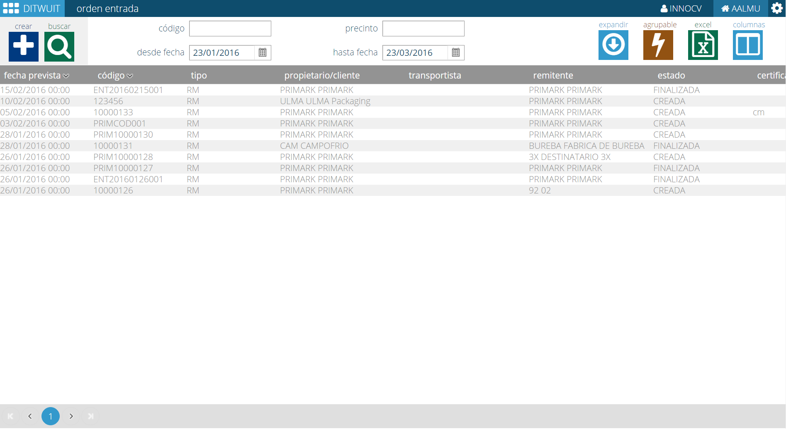
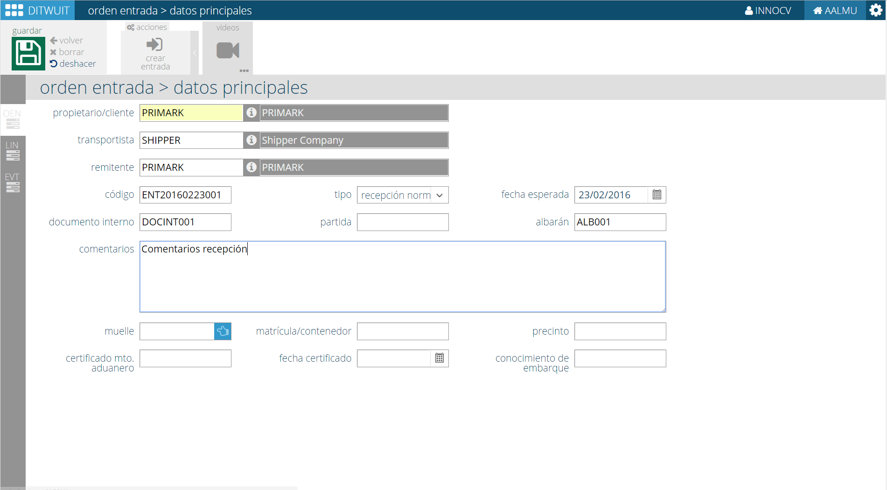
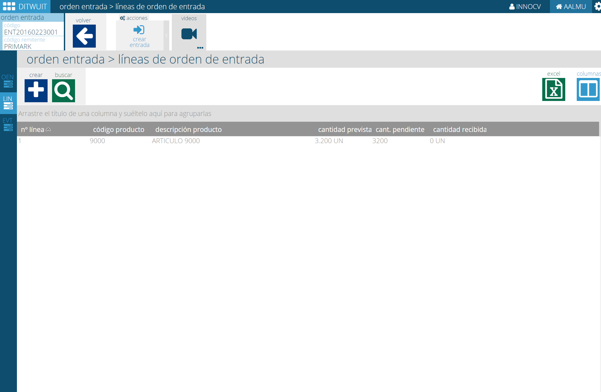
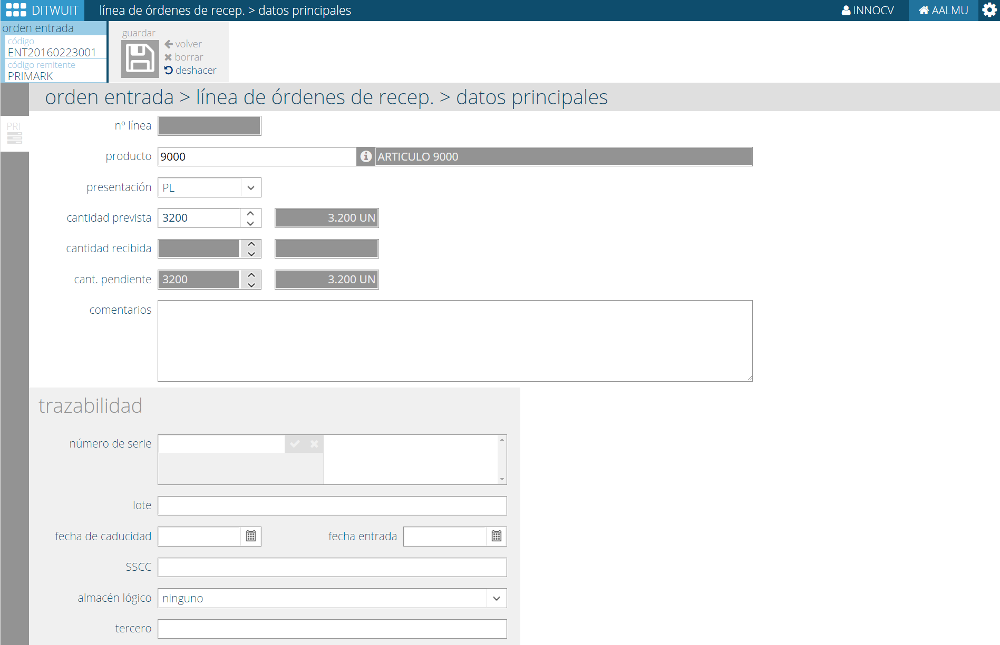

Crear Orden de Entrada¶

Crear una orden de entrada es el primer paso a realizar para poder recibir mercancía. Si es necesario crear una entrada siempre debe existir una orden de entrada ya que, finalmente, siempre existe una orden para realizar dicha recepción, sea verbal o por interfaz.
{kind=link}
Al entrar en la opción se pueden consultar las órdenes de entrada existentes en DITWUIT y proceder a seleccionar aquella que deseemos consultar o bien proceder a crear una orden de entrada nueva.
{kind=link}
Tanto si se procede a entrar a crear una orden de entrada nueva como si se procede a consultar una se accede a la información de datos principales de la orden de entrada.
En esta opción es posible consultar o introducir la siguiente información:
- Propietario. Propietario de la mercancía. Es un dato relevante en el caso de operadores logísticos.
- Transportista. Transportista de la mercancía.
- Remitente. Remitente de la mercancía
- Código. Código que se puede asignar a la orden de entrada para identificarla.
- Tipo. Tipo de orden de entrada. Definible por el cliente.
- Fecha esperada. Fecha esperada de recepción de la mercancía.
- Documento interno. Código interno alternativo asociado a la orden de entrada.
- Partida.
- Albarán. Número asignado por el remitente de la mercancía.
- Comentarios. Comentarios a añadir para informar al área de recepción.
- Muelle. Muelle donde descargar la mercancía.
Otra información:
- Matrícula/contenedor.
- Precinto.
Nota
La información aduanal solicitada sólo es necesaria para clientes con esta funcionalidad
- Certificado Mto. aduanero. Información requerida por motivos aduanales.
- Fecha Certificado.
- Conocimiento de embarque.
{kind=link}
Una vez indicados estos datos y pulsado el botón de Guardar se procede a solicitar la entrada de líneas a la orden de entrada. Esta pantalla sirve también para consultar las líneas de la orden.
 {kind=link}
{kind=link}
A nivel de línea de recepción se dispone de la siguiente información:
- Número de línea.
- Producto. Es la referencia del producto.
- Presentación. Presentación en la que se recibe la mercancía.
- Cantidad Prevista. Cantidad prevista a recibir.
- Cantidad recibida. Dato informativo de la cantidad ya recibida.
- Cantidad pendiente. Dato informativo de la cantidad pendiente de recibir.
- Comentarios. Comentarios a añadir a la línea.
Adicionalmente, es posible añadir información de trazabilidad de la mercancía recibida: Número de Serie, lote, fecha de caducidad, fecha de entrada, SSCC, almacén lógico y tercero.
Una vez registrada toda la información se puede proceder a Crear Entrada.